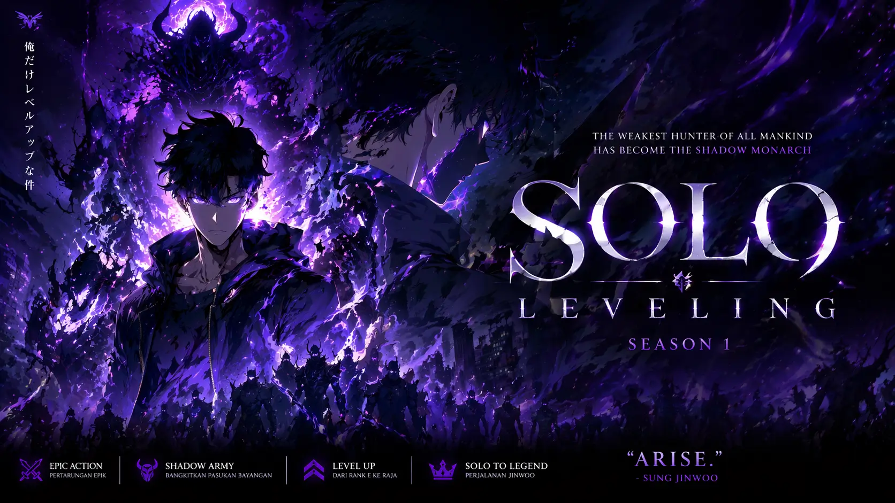

Gambar: © A-1 Pictures / Solo Leveling Animation Partners
Solo Leveling S2: Lebih Gelap, Lebih Brutal, Worth It?
Dipublikasikan 21 April 2026 | Update 24 April 2026
Setelah S1 yang jadi pintu masuk banyak orang ke dunia manhwa, Solo Leveling S2 akhirnya tayang Winter 2026. Ekspektasi tinggi banget. Hasilnya?
Yang Bagus dari Solo Leveling Season 2
A-1 Pictures ga main-main. Fight Sung Jin-Woo vs Igris versi remake itu 10/10. Koreonya rapih, impact-nya kerasa, dan gak ada frame yang kebuang. OST-nya Hiroyuki Sawano bikin merinding tiap arc Jeju Island dimulai.
Pacing juga lebih cepet dari S1. Gak kebanyakan basa-basi, langsung gas ke konflik utama. Character development Jin-Woo kerasa banget, dari yang masih ragu-ragu jadi beneran Shadow Monarch.
Yang Kurang dari Solo Leveling S2
Karakter sampingan tetep numpang lewat. Cha Hae-In screentime-nya masih dikit padahal fans udah teriak minta porsi lebih. Kalau kamu belum baca manhwa, beberapa motivasi villain kerasa maksa dan kurang background.
CGI monster di episode 3-4 agak jomplang sama animasi 2D-nya. Untung cuma sebentar.
Rating AnistreamID: 8.5/10
Wajib tonton buat yang udah nungguin dari S1. Buat yang baru mau mulai, mending maraton S1 dulu biar ga bingung sama sistem leveling sama istilah Hunter/Shadow.
Visual 9/10, Story 8/10, Music 10/10, Character 7/10.
Tayang setiap Minggu 23.30 WIB di:
- Bstation/Bilibili
- Netflix Indonesia
- Crunchyroll
Dukung kreator dengan nonton di platform resmi ya 💜